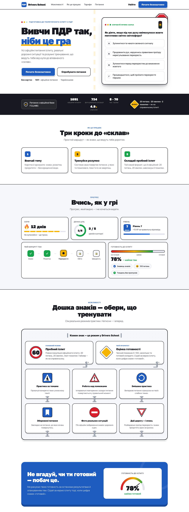
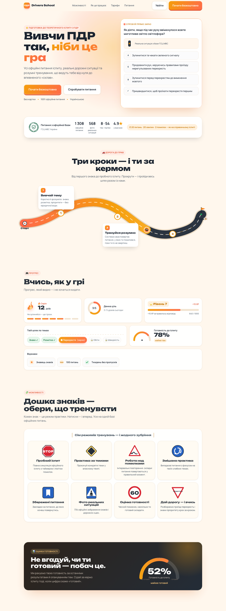
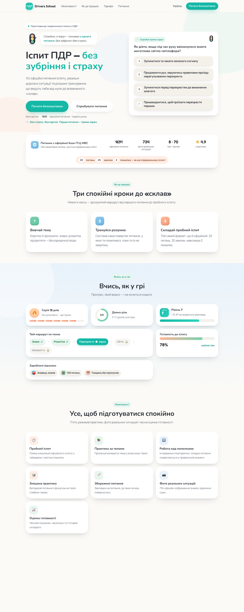
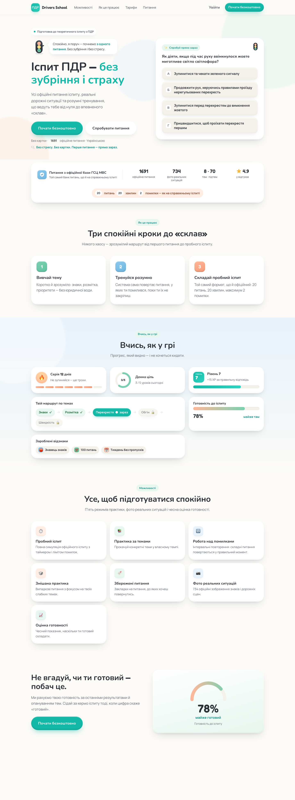
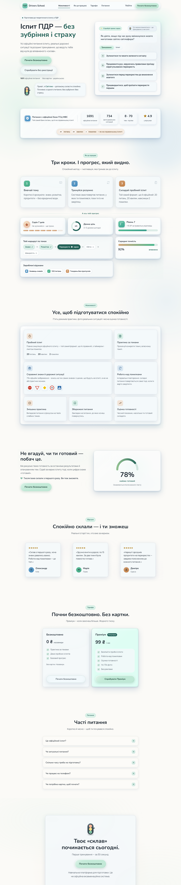

D · Дорожні знаки 🚦
Сміливий і впізнаваний: дорожні знаки — це сам інтерфейс. «Дошка знаків» як список режимів. Найбільш «про водіння».
Відкрити повністю ↗Фіналісти дизайну для підготовки до теоретичного іспиту з ПДР. Відкрийте кожен, погортайте, поділіться — і вирішимо разом, який стиль наш. (Спокійний напрям представлено трьома способами: перша версія, «глина» (clay) та «рідке скло».)

Сміливий і впізнаваний: дорожні знаки — це сам інтерфейс. «Дошка знаків» як список режимів. Найбільш «про водіння».
Відкрити повністю ↗
Мікс: тепла дружня база + «дорога до прав» як головний акцент + дошка знаків + офіційна печатка ГСЦ МВС. Тепло, впізнавано, з довірою.
Відкрити повністю ↗
Найперший спокійний варіант: яскравіші пастелі (м'ятний / блакитний / персиковий) і м'якший зелений CTA — до приглушення палітри.
Відкрити повністю ↗
Оновлена: приглушені пастелі Sage & Slate + об'ємний claymorphism (тоновані тіні) + маскот Світлик.
Відкрити повністю ↗
Той самий спокій у стилі Apple «Liquid Glass»: напівпрозорі скляні панелі, що заломлюють м'які пастельні кольори. Сучасно, легко, делікатно.
Відкрити повністю ↗